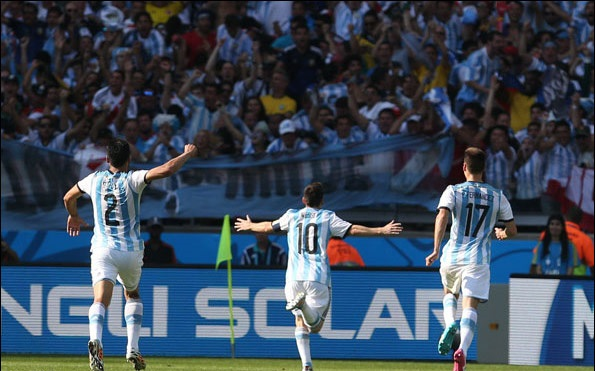
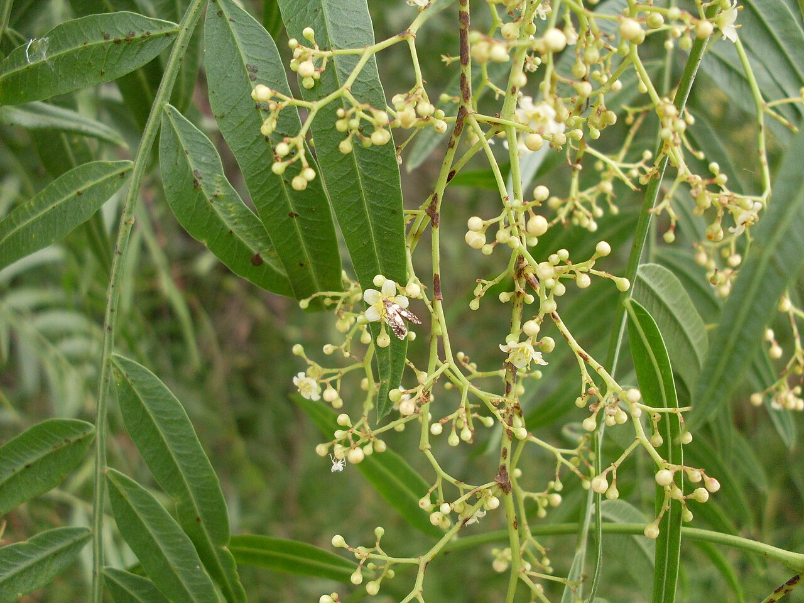
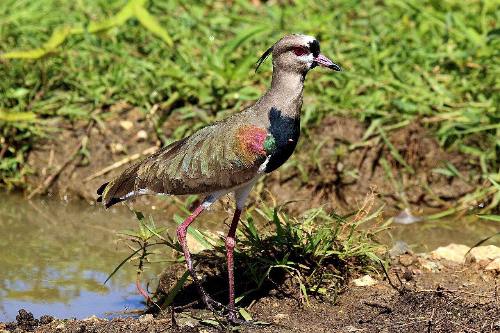
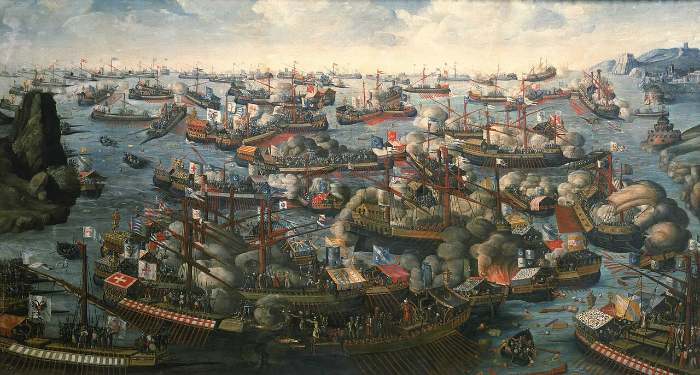
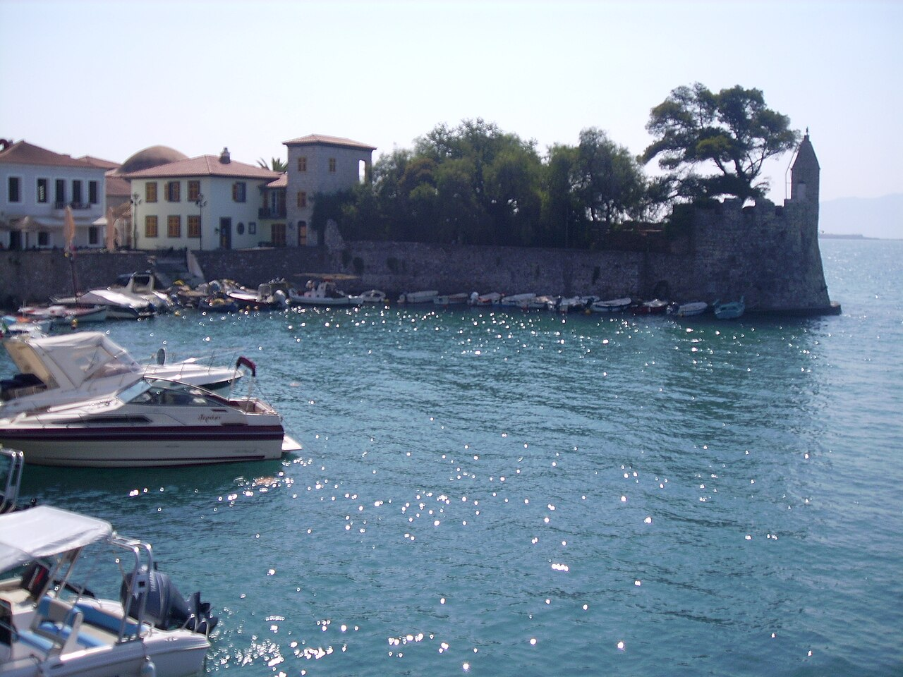

diario de la mañana — el mundo, tu ciudad y lo que te asombra
Nº 7Miércoles 7 de octubre de 2026Buenos Aires≈ 35 min de lectura
Tapa: el monumento a Alfonsina Storni frente al mar, en Mar del Plata. Hoy es miércoles de letras argentinas. Letras argentinas
Buen día. Anoche Messi se despidió con un gol y dos asistencias, y hoy amanecemos con el Nobel de Química, que tiene que ver con algo que estudiaste en orgánica: por qué la vida usa solo una «mano» de las moléculas. Esa idea de la quiralidad atraviesa toda la edición: la menta y el comino, una palabra griega y la batalla donde Cervantes perdió el uso de su mano. Y es miércoles de letras argentinas: Alfonsina Storni.
15° / 19°Tormentas desde la tarde, con 90 % de probabilidad y unos 25 mm. Viento fuerte, de 31 a 49 km/h. El SMN alerta por tormentas en la Ciudad. Paraguas y algo impermeable.
Tres años del 7 de octubre, con la región en guerra
IsraelTercer aniversario de los ataques de Hamás
Israel recuerda hoy los ataques del 7 de octubre de 2023, en los que murieron unas 1.200 personas y unas 250 fueron tomadas como rehenes. El acto central es en el parque Yarkon de Tel Aviv. La guerra que siguió en Gaza dejó decenas de miles de muertos palestinos, y el alto el fuego de octubre de 2025 sigue siendo frágil: esta misma semana hubo nuevos ataques.
Golfo PérsicoDefensa antimisiles israelí sobre Abu Dabi y Dubái
La embajadora de Estados Unidos ante la ONU destacó que el sistema israelí Cúpula de Hierro ayudó a proteger Abu Dabi y Dubái en la guerra con Irán. Es una muestra de cómo cambiaron las alianzas en la región: hace pocos años, Emiratos e Israel no tenían ni relaciones diplomáticas.
Industria del cineSe oficializa la fusión entre Paramount y Warner Bros.
Dos de los estudios más antiguos de Hollywood quedan bajo un mismo techo: los de El padrino y Casablanca. La concentración preocupa por la cantidad de películas que se producen y por el futuro de los catálogos clásicos, que pueden quedar guardados o dispersos entre plataformas.
BrasilPrimera semana de campaña para el balotaje
Lula y Flávio Bolsonaro buscan los votos de los candidatos que quedaron afuera. El 25 de octubre se define.
Argentina y Buenos Aires no vivir adentro de un táper
«Los quiero, los voy a extrañar»
Messi se despidió con gol: Argentina 3, Benín 0

Lionel Messi con la Selección. Foto: Mohammadreza Abbasi · CC BY 4.0 · Wikimedia Commons
En su partido número 208, Messi jugó los 90 minutos, dio dos asistencias (para Otamendi y Nico Paz) y cerró el 3-0 con un penal: su gol 126 con la Selección. Después hubo homenaje en el Monumental y un discurso corto: «Los quiero, los voy a extrañar». Se cierra un ciclo de 21 años con la celeste y blanca.
AySA, a la venta
El Ministerio de Economía aprobó la primera etapa de la licitación para vender el 90 % de las acciones de AySA, la empresa de agua y cloacas del AMBA. Quedaron dos consorcios, y mañana se conocen sus ofertas económicas. Además, el Gobierno informó que hay 47 proyectos inscriptos en el RIGI, el régimen de incentivos para grandes inversiones.
Para pensar: el agua potable es un servicio con un solo proveedor por zona (un monopolio natural). Cómo se regula después de la venta, en tarifas, inversión y calidad, importa tanto como quién compra.
Para un miércoles de tormenta
El SMN alerta por tormentas fuertes desde la tarde. Si podés, volvé temprano.
Museo Casa de Ricardo Rojas (Charcas 2837), una casa de escritor convertida en museo, ideal para un día de letras argentinas. Fijate horarios en la web.
Ciencia nivel colega
Nobel de Química 2026: Kagan y Soai, y el misterio de la mano izquierda de la vida
La vida es homoquiral: las proteínas usan casi exclusivamente L-aminoácidos, y el ADN y el ARN, D-azúcares. Pero cualquier síntesis química sin un catalizador quiral produce mezclas racémicas, 50:50. ¿Cómo surgió esa asimetría? La pregunta viene desde Pasteur, que en 1848 separó a mano los cristales de tartrato. La Real Academia Sueca premió a Henri B. Kagan (Université Paris-Saclay) y a Kenso Soai (Universidad de Ciencias de Tokio) por mostrar mecanismos químicos que amplifican una pequeñísima asimetría hasta la pureza enantiomérica.
Las dos piezas del premio
Kagan: efectos no lineales (1986). En catálisis asimétrica se esperaba que el exceso enantiomérico (ee) del producto fuera proporcional al del catalizador. Kagan mostró que no siempre: con catalizadores que forman agregados (su modelo ML₂), los dímeros heteroquirales (R·S) pueden ser poco activos y «secuestrar» al enantiómero minoritario. El resultado es un efecto no lineal positivo: un catalizador con 50 % de ee puede dar un producto con más de 80 % de ee.
Soai: autocatálisis asimétrica (1995). En la alquilación de una pirimidina-5-carbaldehído con diisopropilcinc, el producto, un alcohol pirimidílico quiral, cataliza su propia formación con la misma configuración. Partiendo de un ee de apenas 0,00005 %, en pocos ciclos se llega a más del 99,5 % de ee. El catalizador activo es un dímero homoquiral del alcóxido de cinc, como mostraron después Donna Blackmond y otros con el modelo de Kagan.
El «gatillo»: la reacción de Soai puede arrancar a partir de cristales quirales de cuarzo, luz circularmente polarizada o incluso isótopos que generan quiralidad. Basta una semilla mínima, y el sistema la amplifica.
Lectura crítica y conexión con tu carrera
La reacción de Soai usa reactivos organometálicos en solventes anhidros, nada parecido a la química prebiótica. Es una prueba de concepto de que la amplificación es químicamente posible, no la explicación de cómo pasó.
Por qué te importa: la quiralidad define la farmacología. La talidomida es el ejemplo trágico, y además se racemiza in vivo. Hoy los fármacos se desarrollan como un solo enantiómero, y los controles de pureza enantiomérica (HPLC quiral) son rutina en la industria farmacéutica y biotecnológica.
Las enzimas son el ejemplo supremo de catálisis asimétrica: por eso la biocatálisis es la vía preferida para sintetizar compuestos enantiopuros.
Soai K, Shibata T, Morioka H, Choji K. «Asymmetric autocatalysis and amplification of enantiomeric excess of a chiral molecule». Nature 378, 767–768 (1995), doi:10.1038/378767a0 · Puchot C, … Agami C, Kagan HB. «Nonlinear effects in asymmetric synthesis». J Am Chem Soc 108, 2353 (1986) · Chemistry World: el anuncio
Biotec en el mundo real · eritropoyetina hecha en Santa Fe
Zelltek, una empresa santafesina que nació del laboratorio de cultivos celulares de la Universidad Nacional del Litoral, produce proteínas terapéuticas recombinantes, entre ellas la eritropoyetina (EPO), la hormona que estimula la producción de glóbulos rojos y que se usa en la anemia de la insuficiencia renal crónica.
Por qué en células CHO y no en bacterias: la EPO es una glicoproteína con tres N-glicosilaciones y una O-glicosilación. Los glicanos son casi el 40 % de su masa.
El ácido siálico manda: los glicanos terminados en ácido siálico evitan que el receptor de asialoglicoproteínas del hígado capture la EPO. Más sialilación significa más vida media y más actividad in vivo. Por eso el control de calidad mira el perfil de isoformas por isoelectroenfoque (IEF): cada ácido siálico agrega una carga negativa.
La paradoja: una EPO con más actividad in vitro (menos sialilada) puede ser mucho menos activa en el paciente. El proceso de cultivo (pH, temperatura, alimentación, tiempo de cosecha) define la glicosilación, así que el proceso es el producto.
Ciencia en la vida cotidiana · Menta o comino: la misma molécula, al revés
La carvona tiene un centro quiral. La (R)-(−)-carvona huele a menta (es el aroma de la hierbabuena, Mentha spicata); su imagen especular, la (S)-(+)-carvona, huele a comino de prado y eneldo. Misma fórmula, mismos enlaces, mismo punto de ebullición, distinto olor. ¿Por qué? Porque los receptores olfativos son proteínas hechas de L-aminoácidos, quirales también, y «ven» a cada enantiómero como una llave distinta.
Lo mismo pasa con el limoneno: el (R)-limoneno huele a naranja y el (S)-limoneno, más a pino y trementina. Tu nariz es, literalmente, un detector de quiralidad.
Mirá a tu alrededor árbol y ave de la semana
El aguaribay, el árbol de la pimienta rosa, y el tero, el guardián del pasto

Aguaribay, con sus ramas colgantes. Foto: John Tann from Sydney, Australia · CC BY 2.0 · Wikimedia Commons

El tero, con su espolón rojo en las alas. Foto: Charles J. Sharp · CC BY-SA 4.0 · Wikimedia Commons
El árbol: aguaribay
Nombre científico
Schinus areira (Anacardiáceas, la familia del mango y del pistacho)
De dónde es
Nativo del noroeste argentino y de los Andes; muy plantado en plazas porteñas.
Cómo reconocerlo
Ramas colgantes como las de un sauce, hojas compuestas finas y aromáticas (estrujá una: huele a resina). Ahora echa racimos de florcitas amarillentas; en verano y otoño, frutitos rosados.
Dato
Sus frutos son la pimienta rosa que venden en las mezclas de pimientas. No es pimienta verdadera (Piper nigrum).
El ave: tero
Nombre científico
Vanellus chilensis (Carádridos)
Cómo reconocerlo
Unos 35 cm, gris con pecho negro, un copete fino en la nuca y patas largas rosadas. Grito fuerte: «teru-teru».
Por qué ahora
Es época de nidos: pone los huevos en el suelo, en el pasto de plazas y parques. Si te acercás, te ataca en vuelo rasante con un espolón rojo que tiene en las alas, o finge estar herido para alejarte.
El dicho
«Hacer como el tero»: gritar en un lado y tener el nido en otro.
Tu misión de hoy
Receta de estación día de tormenta · con su química
Guiso de lentejas para un miércoles de tormenta
Una hora, casi toda sin intervención. Rinde para dos días.
1 cebolla, 1 morrón, 1 zanahoria, 2 dientes de ajo
1 chorizo colorado o panceta (opcional)
1 lata de tomate, 1 litro de caldo
Pimentón, comino, laurel, sal
Pasos
Remojá las lentejas 2 horas (o hasta la noche anterior) y descartá el agua.
Rehogá la cebolla, el morrón, la zanahoria y el ajo; sumá el chorizo.
Agregá el pimentón fuera del fuego (se quema fácil), las lentejas y el caldo.
Cociná 30 a 40 minutos tapado, a fuego bajo. El tomate y la sal, en los últimos 15 minutos.
La química de la receta
El remojo y los gases: las legumbres tienen oligosacáridos de la familia de la rafinosa (rafinosa, estaquiosa), que no digerimos porque no tenemos α-galactosidasa. Llegan intactos al colon y las bacterias los fermentan, produciendo H₂, CO₂ y metano. El remojo saca una parte al agua, por eso se descarta.
Por qué el tomate va al final: el ácido y el calcio estabilizan la pectina de las paredes celulares (los iones Ca²⁺ forman puentes entre cadenas de pectina), y las legumbres quedan duras. Con el pH neutro primero se ablandan; el tomate se suma cuando ya están tiernas.
El pimentón fuera del fuego: sus carotenoides y azúcares se queman en segundos en aceite caliente y amargan.
Una molécula es quiral si no se puede superponer con su imagen en el espejo, igual que tu mano izquierda con la derecha. La palabra la acuñó lord Kelvin en 1894, a partir del griego kheír, «mano». De la misma raíz vienen quiromancia (leer las manos), quiróptero (los murciélagos: «manos-ala») y cirugía (de kheirourgía, «trabajo con las manos»).
Fijate el hilo: los murciélagos de la edición Nº 2 son quirópteros. La palabra de hoy los conecta con el Nobel de Química.
Le français du matin semana 2: la hora
Il est huit heures et demie
Y cuarto, y media, menos cuarto. Escuchalo dos veces.
Il est sept heures et quart. Je bois un café.
Il est huit heures et demie. Je lis le journal.
Il est neuf heures moins le quart. J'étudie.
et quart
y cuarto [e KAR]
et demie
y media [e də-MÍ]
moins le quart
menos cuarto [muan lə KAR]
Je lis le journal.
Leo el diario. [yə li lə yur-NAL]
J'étudie.
Estudio. [ye-tü-DÍ]
Un truco
Es igual que en castellano: «son las ocho y media» = il est huit heures et demie; «son las nueve menos cuarto» = il est neuf heures moins le quart. Y le journal, «el diario», es justamente lo que estás leyendo.
À toi:
English corner level C1 · science writing
Life's left hand
Hold your hands up, palms facing you. They are mirror images, yet no amount of turning will make one sit perfectly on top of the other. Many molecules share this quirk, known as chirality, and life, for reasons that have puzzled chemists since Louis Pasteur, plays favourites: its proteins are built almost exclusively from left-handed amino acids, its genetic material from right-handed sugars.
The puzzle is that ordinary chemistry is even-handed. Left to its own devices, a reaction that creates a chiral molecule churns out both forms in equal measure. So how did the early Earth tip the balance so decisively? This year's Nobel laureates in chemistry offered part of the answer. Henri Kagan showed that the relationship between a catalyst's purity and that of its products need not be linear, and Kenso Soai went further, discovering a reaction whose product catalyses its own formation, snowballing a vanishingly small bias into near-total purity.
Nobody claims that Soai's flask recreates the primordial soup. But by demonstrating that amplification is chemically feasible, the two men turned a philosophical riddle into a tractable experimental question.
a quirk — una rareza, una peculiaridad
to play favourites — tener preferidos
even-handed — imparcial
left to its own devices — librado a sí mismo
to churn out — producir en cantidad
to tip the balance — inclinar la balanza
to snowball — crecer como una bola de nieve
tractable — abordable, manejable
Your turn (answer in English):
Miércoles de letras argentinas
Alfonsina Storni, «Tú me quieres blanca» (1918)
Un poema que a principios del siglo XX fue un escándalo, y que todavía se lee como un manifiesto. Fragmento.
Tú me quieres alba, me quieres de espumas, me quieres de nácar. Que sea azucena sobre todas, casta. De perfume tenue. Corola cerrada.
Ni un rayo de luna filtrado me haya. Ni una margarita se diga mi hermana. Tú me quieres nívea, tú me quieres blanca, tú me quieres alba.
[…]
Huye hacia los bosques, vete a la montaña; límpiate la boca; vive en las cabañas; toca con las manos la tierra mojada; […] y cuando las carnes te sean tornadas, y cuando hayas puesto en ellas el alma que por las alcobas se quedó enredada, entonces, buen hombre, preténdeme blanca, preténdeme nívea, preténdeme casta.
Para entrar al poema
La estructura: la primera mitad repite lo que el hombre exige (blancura, pureza, flores cerradas); la segunda da vuelta todo y le exige a él que se purifique primero. El «buen hombre» final es pura ironía.
El contexto: Storni era madre soltera, trabajaba como maestra y periodista y vivía de su escritura en el Buenos Aires de los años 10 y 20. Una mujer así desafiaba todas las normas de la época. Fue una de las primeras feministas de la literatura argentina.
Su final y la canción: enferma de cáncer, se quitó la vida en Mar del Plata en 1938. Ariel Ramírez y Félix Luna le dedicaron la zamba «Alfonsina y el mar» (1969), que cantó Mercedes Sosa.
Dónde está: en Mar del Plata, frente a la playa La Perla, hay un monumento de piedra en su memoria.
Hoy en la historia · un lugar en el mapa
7 de octubre de 1571: Lepanto, y la mano de Cervantes

La batalla de Lepanto en una pintura de la época. Foto: Unidentified painter · Public domain · Wikimedia Commons
En el golfo de Patras, frente a Grecia, la Liga Santa (España, Venecia y los Estados Pontificios) derrotó a la flota del Imperio otomano en la mayor batalla naval de galeras de la historia: más de 400 barcos. Un soldado de 24 años, con fiebre, pidió pelear igual: recibió dos tiros en el pecho y uno en la mano izquierda, que le quedó inutilizada para siempre. Se llamaba Miguel de Cervantes, y desde entonces lo llamaron «el manco de Lepanto». Él la recordaba como «la más alta ocasión que vieron los siglos».
El lugar: Náfpaktos (Lepanto)

El pequeño puerto amurallado de Náfpaktos. Foto: KufoletoAntonio De Lorenzo and Marina Ventayol · CC BY 3.0 · Wikimedia Commons
Dónde
En la costa norte del golfo de Corinto, en Grecia, a unos 9 km del puente Río-Antirio
El nombre
Lepanto es el nombre italiano (veneciano) de la ciudad; los griegos la llaman Náfpaktos.
Hoy
Un pueblo turístico con un puerto medieval amurallado y una estatua de Cervantes en el muelle.
Conexión
La mano perdida de Cervantes y la «mano» de las moléculas quirales: el hilo de esta edición.
Lo que me asombra hoy
Los científicos que pidieron no crear «vida espejo»
En teoría, se podría construir una bacteria con todo al revés: D-aminoácidos, L-azúcares. En diciembre de 2024, un grupo de 38 científicos, entre ellos algunos que trabajaban en el tema, publicó en Science un pedido para no hacerlo. La razón: una «bacteria espejo» sería invisible para nuestro sistema inmune, porque los anticuerpos, las proteasas y los receptores no reconocerían sus moléculas, y probablemente tampoco tendría depredadores ni virus que la controlaran.
Es uno de los pocos casos en la historia de la ciencia en que los propios investigadores pidieron frenar una línea de trabajo antes de que fuera posible. La homoquiralidad, el tema del Nobel de hoy, es también nuestra defensa.
Pasatiempo sudoku · nivel medio
Para mientras llueve
Completá cada fila, cada columna y cada caja de 3×3 con los números del 1 al 9, sin repetir. Tiene una sola solución.
86224239169828715356732116425249
Cuaderno para repasar lo de hoy
Repaso y quiz de la mañana
Repaso de idiomas
Quiz
¿Qué describió Kagan en 1986?
En la reacción de Soai, ¿qué cataliza la formación del producto?
¿Qué determina la vida media de la EPO recombinante?
La (R)-carvona huele a…
¿Qué son los frutos del aguaribay?
¿Por qué se le agrega el tomate al final a las lentejas?
¿Qué zamba se escribió en homenaje a Storni?
«Il est huit heures et demie» significa…
«Tractable» significa…
Escritura: tres líneas para hoy
Soluciones tocá para destapardadas vuelta, para no espiar
Quiz: efectos no lineales · el propio producto · el ácido siálico · menta · la pimienta rosa · el ácido endurece la pectina · «Alfonsina y el mar» · son las ocho y media · abordable.
Repaso: douze · quinze · vingt · tu as quel âge ? · irrelevante · rendir homenaje a · preverlo.
Français 2: Il est dix heures et quart.
English 1: Kagan showed that product purity need not scale linearly with catalyst purity; Soai found a self-catalysing reaction that amplifies a tiny bias.
.jpg){kind=link}
.jpg){kind=link}